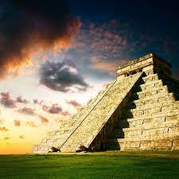
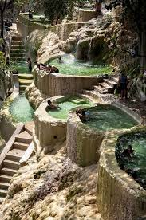

Pueblos, Playas, Museos y todas las increibles maravillas de Mexico
Mexico es un pais famoso por sus hermosas playas, su diverso paisaje de montañas, desiertos y selvas. Las ruinas antiguas, como Teotihuacán y la ciudad maya de Chichén Itzá, se distribuyen por el país, al igual que las ciudades de la época colonial española. En la capital Ciudad de México, las elegantes tiendas, los famosos museos y los restaurantes gourmet son parte de la vida moderna. Aqui les hablaremos de esos increibles y bellos lugares turisticos.
Estas solo seran algunas de las muchas zonas turísticas que México tiene para ofrecer. Cada una ofrece una experiencia única y emocionante, ya sea que estés buscando relajarte en la playa, explorar la historia y la cultura, o aventurarte en la naturaleza
 Más de 450 playas conforman la costa mexicana, ya sea con vistas al Pacífico mexicano, al Golfo de México o al Mar Caribe. Hay muchas opciones para disfrutar de las mejores playas del país las playas van de preciosa arena blanca y aguas turquesas a playas con ruinas mayas frente al mar.
Un "Pueblo Mágico" es un sitio con símbolos y leyendas, poblados con historia que en muchos casos han sido escenario de hechos trascendentes para nuestro país, son lugares que muestran la identidad nacional en cada uno de sus rincones, con una magia que emana de sus atractivos; visitarlos es una oportunidad para descubrir el encanto de México, actualmente existen en Mexico 132 "Pueblos Magicos".
México Cuenta con 32 Estados, que pueden considerarse 32 diferentes destinos turísticos, cada uno con su propio encanto. Algunos lugares más famosos que otros, pero no menos importantes.
| Lugar turistico | Arrecife Mesoamericano, Quintana Roo. Es el segundo arrecife más grande del mundo después de la Gran Barrera de Coral y se extiende a lo largo de 700 millas. En el arrecife se encuentra una gran variedad de vida marina, como vívidas formaciones coralinas y un asombroso número de especies de peces. |
|---|---|
| Pueblo | Zihuatanejo. Zihuatanejo es la ciudad más grande y un hermoso centro turístico en la costa pacífica de Guerrero en México. Su seductora fusión de belleza natural virgen, diversidad cultural y ambiente relajado lo convierten en un lugar de visita obligada. |
| Playas | Isla Cozumel. Cozumel tiene playas impresionantes, maravillas submarinas, culturas históricas y deportes estimulantes. La Isla Cozumel, situada en los mares turquesas del Caribe, alberga exquisitas playas de arena blanca, lo que la convierte en un paraíso para los amantes de la playa y los deportes acuáticos. |
| Lugar turistico | Barrancas del Cobre, Chihuahua. Aún más amplias y profundas que el Gran Cañón, las Barrancas del Cobre son una red de cañones interconectados que se extiende a lo largo de 40.000 kilómetros cuadrados en las agrestes tierras altas de la Sierra Madre Occidental de México. |
| Pueblo magico | Tulum. Tulum es una fascinante ciudad costera situada en la Riviera Maya mexicana, que lo tiene todo: desde playas perfectas y ruinas antiguas hasta un estilo de vida bohemio e impresionantes paisajes naturales. |
| Playa | Acapulco. Con sus bellos paisajes, su rico legado cultural, sus atractivas playas, su deliciosa cocina y su excitante vida nocturna, el atractivo de Acapulco es ineludible. Se encuentra en la costa del Pacífico mexicano |
| Playa | Playa del Carmen. Playa del Carmen, una impresionante joya costera escondida junto al mar Caribe, atrae con sus playas inmaculadas, su rica historia, su variada cultura y sus ilimitadas posibilidades de aventura. Es uno de los mejores lugares de visitar en México |
En conclusion, México es un lugar rico en lugares turisticos, historia y lugares para poder disfrutar libremente. México es un país que vale la pena visitar para poder disfrutar de todas sus maravillas solo o acompañado, espero que hayan podido disfrutar de mi pagina y/o averiguar lo que necesitaban.